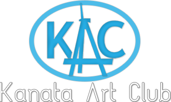

<!DOCTYPE html>
<html lang="en">
  <head>
    <!-- Boilerplate code, no need to touch -->
    <meta charset="utf-8">
    <meta name="viewport" content="width=device-width, initial-scale=1, shrink-to-fit=no">
    <!-- End of boilerplate code -->

    <!-- Logo import -->
    <link rel="shortcut icon" href="portal.png">

    <!-- Font import from google fonts -->
    <link href="https://fonts.googleapis.com/css?family=Lusitana|Raleway:500" rel="stylesheet">

    <!-- Boostrap code import using a CDN. This requires internet connection as it downloads the file upon startup of the webpage inside the browser! -->
    <link rel="stylesheet" href="https://maxcdn.bootstrapcdn.com/bootstrap/3.3.7/css/bootstrap.min.css" integrity="sha384-BVYiiSIFeK1dGmJRAkycuHAHRg32OmUcww7on3RYdg4Va+PmSTsz/K68vbdEjh4u" crossorigin="anonymous">
    
    <style>  
      body {
        font-family: 'Lusitana', serif;
      }
      h1, h2, h3, h4 {
        font-family: 'Raleway', sans-serif;
      }
      .menu_element {
        font-size: 20px;
      }
      
      .gallery-item {
        margin-top: 10px;
        margin-bottom: 10px;
      }
      #header {
        margin-top: 25px;
        background-image: url("four.jpg");
        background-size: cover;
        background-position: 0% 75%;
        height: 500px;
        color: #731c1c !important;
      }
      a { color: white; }
    
    </style>
    
    <title>About us/title>
    
  </head>
  <body>
	  
 <div class="container" id="main">
      <div class="row">
        <div class="col-md-12">
          <div class="jumbotron" id="header">

            <h1 style="opacity:1;">About us</h1>

            <p style="color:#0579c7; font-weight: bold;">General inquiries: info@kanataartclub.ca</p>
            <p ><a class="btn btn-info btn-lg" href="https://jameswhiteford.github.io/" role="button">Go Back</a></p>
          </div>
        </div>
        
        <h1>THE KAC MISSION:</h1>
        <p>The Kanata Art club is a "not-for-profit" volunteer-administered organization created to inspire and support member artists at all levels, by expanding their artistic knowledge and skills, particularly in regards to painting.  </p>
        <h1>THE KAC MANDATE: </h1>
        <p>The KAC shall engage in, promote and organize recreational, social, art, cultural and art related educational activities to serve people of all ages in the community in liaison with the responsible officials of the City of Ottawa.</p>
        <h1>A LITTLE CLUB HISTORY</h1>
        <p>In the 1960’s, a few Kanata residents got together to paint every week and sought to invite local instructors to help them hone their skills and release latent talents. From this beginning, the Kanata Art Club (KAC) was established. The Kanata Art club has been inspiring and supporting member artists at all levels for over 50 years. The club membership has continued to grow and KAC now offers classes, workshops and studio time from September until June at the March Community Centre, 630 Cameron Harvey Drive (formerly 1030 Riddell Drive), Kanata K2K 1X7. Throughout the year, the KAC also hosts a Juried Show, a Members' Show and Sale, and a pre-Christmas $100 and Under Sale. Sometimes, during the summer months, members arrange to meet for an outing of plein air painting.</p>
	      
	      
	     
        
        <html lang="en">

</html>                             
  </body>
</html>
